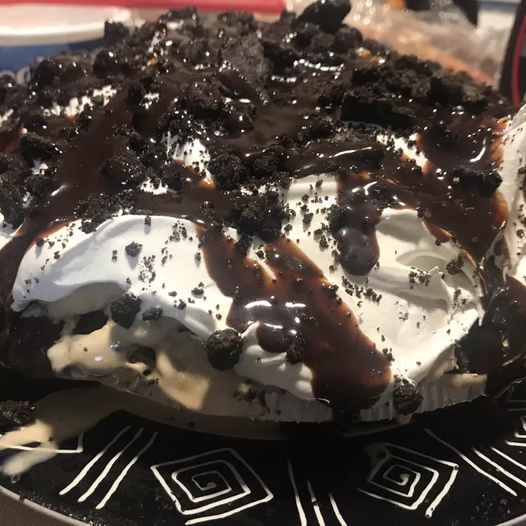

Best Mud Pie

Description
This mud pie recipe is a dynamite version of a favorite dessert made by layering ice cream, chocolate fudge sauce, and cookies!
Ingredients
- 1(6ounce) chocolate sandwich cookie crumb crust(such as an OREO crust
- 1 quart coffee ice cream, divided
- 1 (12 ounce) package miniature chocolate chips
- 1 (12 ounce) jar hot fudge topping
- 1/2 (18 ounce) package crushed chocolate sandwich cookies, divided
- 1 (8 ounce) container frozen whipped topping, thawed
- 3/4 cup chocolate syrup
Steps
- Freeze crust until firm, about 30 minutes
- Meanwhile, place 1/2 of the coffee ice cream into a bowl, and let it soften, about 10 minutes. Return remaining ice cream to the freezer. Mix softened ice cream with mini chocolate chips. Spread mixture in an even layer over the frozen crust. Cover with plastic wrap and freeze for 2 hours.
- Heat fudge topping in the microwave on low until just warm and easy to pour, about 30 seconds. Pour into a bowl. Set aside 2 tablespoons cookie crumbs for garnish; stir remaining cookie crumbs into fudge topping
- Remove pie from the freezer and layer fudge mixture over ice crem layer. Cover with plastic wrap, and return to the freezer for 2 hours.
- Take remaining grozen coffee ice cream out of the freezer, and allow to soften, about 10 minutes. Spread ice cream over fudge layer. COver with plastic wrap, and return to the freezer for 2 more hours.
- Remove pie, and spread whipped topping over top. Sprinkle with reserved cookie crumbs to garnish. Cover with plastic wrap and freeze for 2 more hours.
- Cut the pie into serving pieces and drizzle each serving with about 1 tablespooon chocolate syrup